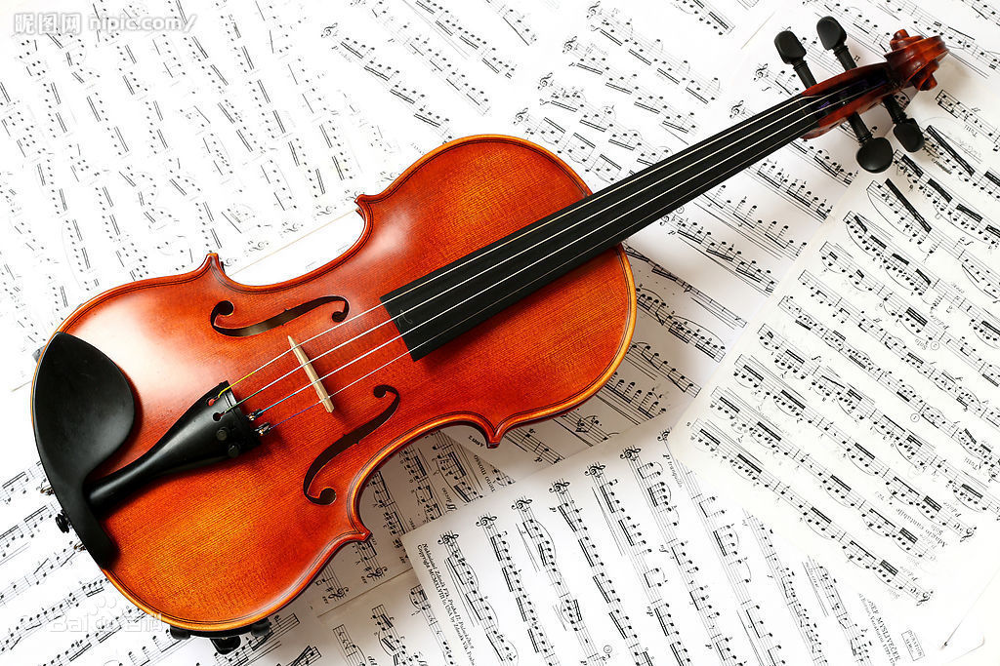

弦乐器
弦乐器是乐器家族内的一个重要分支，在古典音乐乃至现代音乐中，几乎所有的抒情旋律都由弦乐声部来演奏。可见，柔美、动听是所有弦乐器的共同特征。弦乐器的音色统一，有多层次的表现力：合奏时澎湃激昂，独奏时温柔婉约；又因为丰富多变的弓法（颤、碎、拨、跳，等）而具有灵动的色彩。
弦乐器（strings）的发音方式是依靠机械力量使张紧的弦振动发音，故发音音量受到一定限制。弦乐器通常用不同的弦演奏不同的音，有时则须运用手指按弦来改变弦长，从而达到改变音高的目的。
常见弦乐器：小提琴、大提琴、中提琴、倍低音提琴、竖琴。
|  |
©2017 - 柴臻豪 胡苏兴 回首页 |